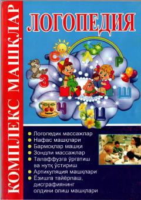

LKNutq nuqsonlarini tuzatish va logopedik mashqlar bajarish bo'yicha amaliy qo'llanma.
Ushbu uslubiy qo'llanmada nutqida nuqsoni bo'lgan maktabgacha va kichik maktab yoshidagi bolalarning артикуляция a'zolari hamda umumiy va mayda qo'l motorikasini rivojlantirishga oid materiallar va zondli massaj mashqlari berilgan. Qo'llanma pedagogika yo'nalishidagi talabalar, amaliyotchi logopedlar, defektologlar va ota-onalar uchun mo'ljallangan.